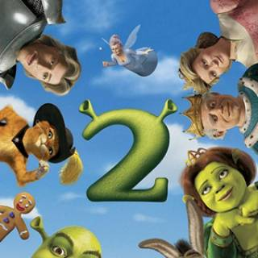
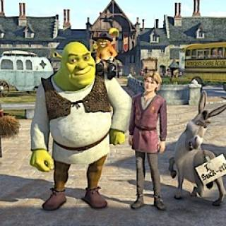
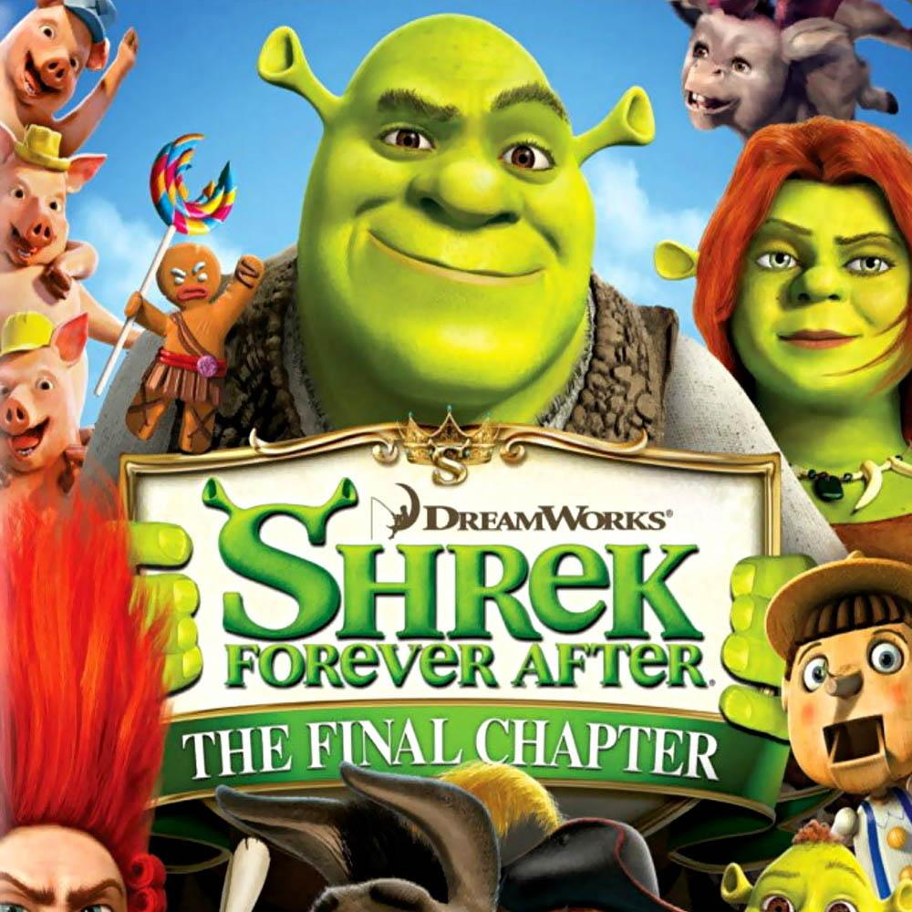

Puss in Boots, Prince Charming, Fairy God Mother, King Harold, Queen Lillian

Shrek the Third
2007
Merlin, Arthur Pendragon, Fergus, Farkle, Felicia

Shrek Forver After
2010
Rumpelstiltskin, Fighter Fiona and other Ogres

While many of the 90's Kids know who Chris Farley is, many of the younger
generation does not know the amazing Tommy Boy, Chippendales Try-Out and the
one and only Matt Foley, who lives in a Van down by the River. But even 90's
kids may not know that Farley was orginally slated to play the beloved
Shrek. If it were not for his untimely demise, who knows how Shrek would have
grown into our hearts. Even the concept art changed since the Chris Farley
rendition of Shrek with Eddie Murphy as Donkey. The video below shows the
original sketches and dialogue between Donkey and Shrek, and after many revisions
we have the finished product we know today as Shrek, along with his many sequels.